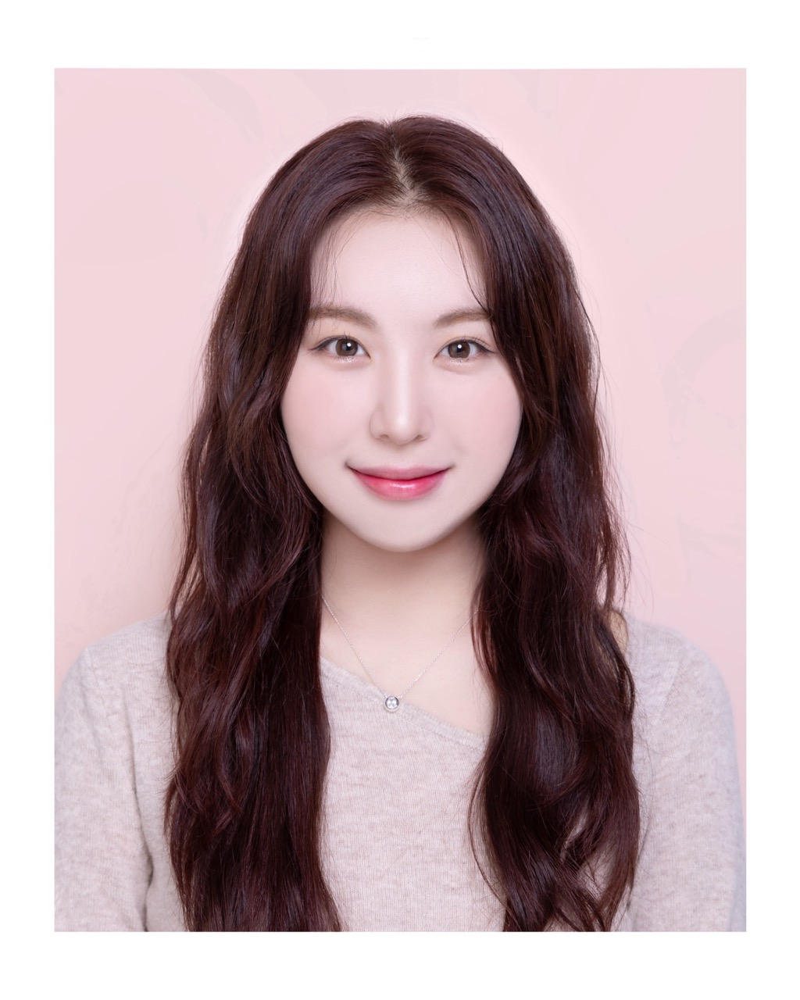
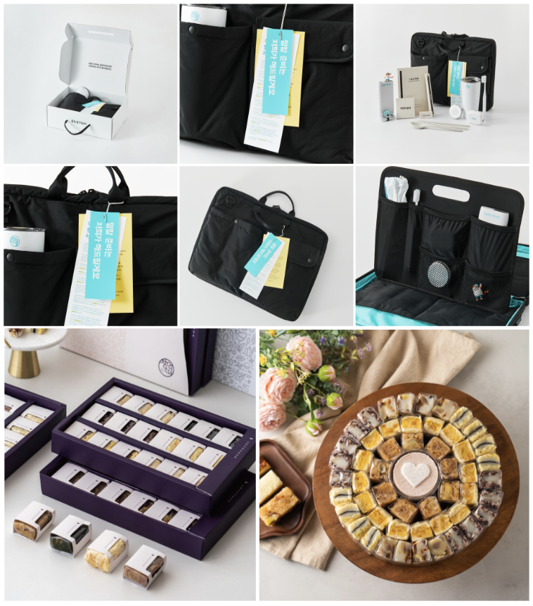
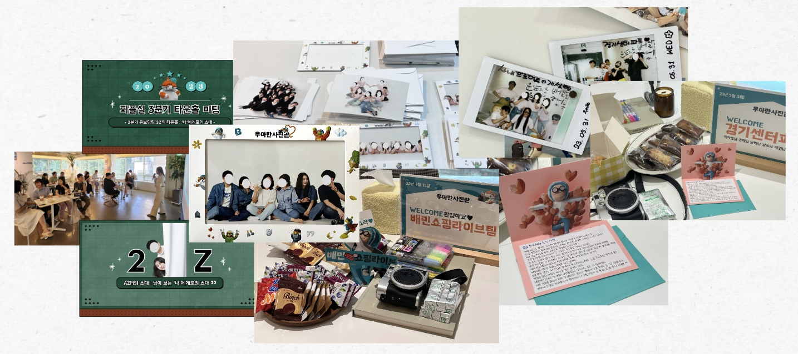
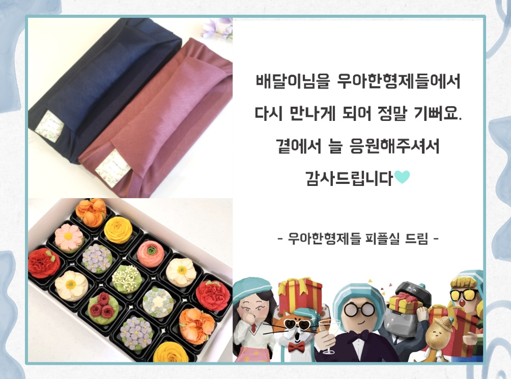
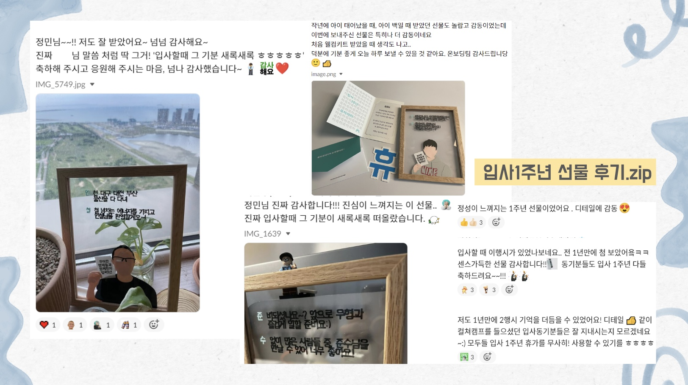
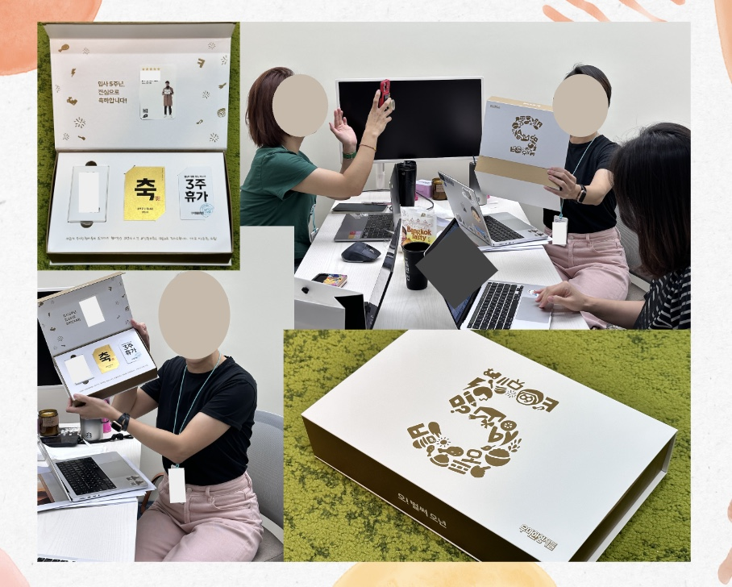

<html>
	<head>
        <link rel="apple-touch-icon" sizes="180x180" href="/assets/apple-touch-icon.png">
        <link rel="icon" type="image/png" sizes="32x32" href="/assets/favicon-32x32.png">
        <link rel="icon" type="image/png" sizes="16x16" href="/assets/favicon-16x16.png">
        <link rel="manifest" href="/assets/site.webmanifest">
        <link rel="mask-icon" href="/assets/safari-pinned-tab.svg" color="#e6d2dc">
        <meta name="msapplication-TileColor" content="#e6d2dc">
        <meta name="theme-color" content="#e6d2dc">
	</head>
</html>
<html><head><meta http-equiv="Content-Type" content="text/html; charset=utf-8"/><title>행복 발견가,  손정민</title><style>
/* cspell:disable-file */
/* webkit printing magic: print all background colors */
html {
	-webkit-print-color-adjust: exact;
}
* {
	box-sizing: border-box;
	-webkit-print-color-adjust: exact;
}

html,
body {
	margin: 0;
	padding: 0;
}
@media only screen {
	body {
		margin: 2em auto;
		max-width: 900px;
		color: rgb(55, 53, 47);
	}
}

body {
	line-height: 1.5;
	white-space: pre-wrap;
}

a,
a.visited {
	color: inherit;
	text-decoration: underline;
}

.pdf-relative-link-path {
	font-size: 80%;
	color: #444;
}

h1,
h2,
h3 {
	letter-spacing: -0.01em;
	line-height: 1.2;
	font-weight: 600;
	margin-bottom: 0;
}

.page-title {
	font-size: 2.5rem;
	font-weight: 700;
	margin-top: 0;
	margin-bottom: 0.75em;
}

h1 {
	font-size: 1.875rem;
	margin-top: 1.875rem;
}

h2 {
	font-size: 1.5rem;
	margin-top: 1.5rem;
}

h3 {
	font-size: 1.25rem;
	margin-top: 1.25rem;
}

.source {
	border: 1px solid #ddd;
	border-radius: 3px;
	padding: 1.5em;
	word-break: break-all;
}

.callout {
	border-radius: 3px;
	padding: 1rem;
}

figure {
	margin: 1.25em 0;
	page-break-inside: avoid;
}

figcaption {
	opacity: 0.5;
	font-size: 85%;
	margin-top: 0.5em;
}

mark {
	background-color: transparent;
}

.indented {
	padding-left: 1.5em;
}

hr {
	background: transparent;
	display: block;
	width: 100%;
	height: 1px;
	visibility: visible;
	border: none;
	border-bottom: 1px solid rgba(55, 53, 47, 0.09);
}

img {
	max-width: 100%;
}

@media only print {
	img {
		max-height: 100vh;
		object-fit: contain;
	}
}

@page {
	margin: 1in;
}

.collection-content {
	font-size: 0.875rem;
}

.column-list {
	display: flex;
	justify-content: space-between;
}

.column {
	padding: 0 1em;
}

.column:first-child {
	padding-left: 0;
}

.column:last-child {
	padding-right: 0;
}

.table_of_contents-item {
	display: block;
	font-size: 0.875rem;
	line-height: 1.3;
	padding: 0.125rem;
}

.table_of_contents-indent-1 {
	margin-left: 1.5rem;
}

.table_of_contents-indent-2 {
	margin-left: 3rem;
}

.table_of_contents-indent-3 {
	margin-left: 4.5rem;
}

.table_of_contents-link {
	text-decoration: none;
	opacity: 0.7;
	border-bottom: 1px solid rgba(55, 53, 47, 0.18);
}

table,
th,
td {
	border: 1px solid rgba(55, 53, 47, 0.09);
	border-collapse: collapse;
}

table {
	border-left: none;
	border-right: none;
}

th,
td {
	font-weight: normal;
	padding: 0.25em 0.5em;
	line-height: 1.5;
	min-height: 1.5em;
	text-align: left;
}

th {
	color: rgba(55, 53, 47, 0.6);
}

ol,
ul {
	margin: 0;
	margin-block-start: 0.6em;
	margin-block-end: 0.6em;
}

li > ol:first-child,
li > ul:first-child {
	margin-block-start: 0.6em;
}

ul > li {
	list-style: disc;
}

ul.to-do-list {
	padding-inline-start: 0;
}

ul.to-do-list > li {
	list-style: none;
}

.to-do-children-checked {
	text-decoration: line-through;
	opacity: 0.375;
}

ul.toggle > li {
	list-style: none;
}

ul {
	padding-inline-start: 1.7em;
}

ul > li {
	padding-left: 0.1em;
}

ol {
	padding-inline-start: 1.6em;
}

ol > li {
	padding-left: 0.2em;
}

.mono ol {
	padding-inline-start: 2em;
}

.mono ol > li {
	text-indent: -0.4em;
}

.toggle {
	padding-inline-start: 0em;
	list-style-type: none;
}

/* Indent toggle children */
.toggle > li > details {
	padding-left: 1.7em;
}

.toggle > li > details > summary {
	margin-left: -1.1em;
}

.selected-value {
	display: inline-block;
	padding: 0 0.5em;
	background: rgba(206, 205, 202, 0.5);
	border-radius: 3px;
	margin-right: 0.5em;
	margin-top: 0.3em;
	margin-bottom: 0.3em;
	white-space: nowrap;
}

.collection-title {
	display: inline-block;
	margin-right: 1em;
}

.page-description {
    margin-bottom: 2em;
}

.simple-table {
	margin-top: 1em;
	font-size: 0.875rem;
	empty-cells: show;
}
.simple-table td {
	height: 29px;
	min-width: 120px;
}

.simple-table th {
	height: 29px;
	min-width: 120px;
}

.simple-table-header-color {
	background: rgb(247, 246, 243);
	color: black;
}
.simple-table-header {
	font-weight: 500;
}

time {
	opacity: 0.5;
}

.icon {
	display: inline-block;
	max-width: 1.2em;
	max-height: 1.2em;
	text-decoration: none;
	vertical-align: text-bottom;
	margin-right: 0.5em;
}

img.icon {
	border-radius: 3px;
}

.user-icon {
	width: 1.5em;
	height: 1.5em;
	border-radius: 100%;
	margin-right: 0.5rem;
}

.user-icon-inner {
	font-size: 0.8em;
}

.text-icon {
	border: 1px solid #000;
	text-align: center;
}

.page-cover-image {
	display: block;
	object-fit: cover;
	width: 100%;
	max-height: 30vh;
}

.page-header-icon {
	font-size: 3rem;
	margin-bottom: 1rem;
}

.page-header-icon-with-cover {
	margin-top: -0.72em;
	margin-left: 0.07em;
}

.page-header-icon img {
	border-radius: 3px;
}

.link-to-page {
	margin: 1em 0;
	padding: 0;
	border: none;
	font-weight: 500;
}

p > .user {
	opacity: 0.5;
}

td > .user,
td > time {
	white-space: nowrap;
}

input[type="checkbox"] {
	transform: scale(1.5);
	margin-right: 0.6em;
	vertical-align: middle;
}

p {
	margin-top: 0.5em;
	margin-bottom: 0.5em;
}

.image {
	border: none;
	margin: 1.5em 0;
	padding: 0;
	border-radius: 0;
	text-align: center;
}

.code,
code {
	background: rgba(135, 131, 120, 0.15);
	border-radius: 3px;
	padding: 0.2em 0.4em;
	border-radius: 3px;
	font-size: 85%;
	tab-size: 2;
}

code {
	color: #eb5757;
}

.code {
	padding: 1.5em 1em;
}

.code-wrap {
	white-space: pre-wrap;
	word-break: break-all;
}

.code > code {
	background: none;
	padding: 0;
	font-size: 100%;
	color: inherit;
}

blockquote {
	font-size: 1.25em;
	margin: 1em 0;
	padding-left: 1em;
	border-left: 3px solid rgb(55, 53, 47);
}

.bookmark {
	text-decoration: none;
	max-height: 8em;
	padding: 0;
	display: flex;
	width: 100%;
	align-items: stretch;
}

.bookmark-title {
	font-size: 0.85em;
	overflow: hidden;
	text-overflow: ellipsis;
	height: 1.75em;
	white-space: nowrap;
}

.bookmark-text {
	display: flex;
	flex-direction: column;
}

.bookmark-info {
	flex: 4 1 180px;
	padding: 12px 14px 14px;
	display: flex;
	flex-direction: column;
	justify-content: space-between;
}

.bookmark-image {
	width: 33%;
	flex: 1 1 180px;
	display: block;
	position: relative;
	object-fit: cover;
	border-radius: 1px;
}

.bookmark-description {
	color: rgba(55, 53, 47, 0.6);
	font-size: 0.75em;
	overflow: hidden;
	max-height: 4.5em;
	word-break: break-word;
}

.bookmark-href {
	font-size: 0.75em;
	margin-top: 0.25em;
}

.sans { font-family: ui-sans-serif, -apple-system, BlinkMacSystemFont, "Segoe UI", Helvetica, "Apple Color Emoji", Arial, sans-serif, "Segoe UI Emoji", "Segoe UI Symbol"; }
.code { font-family: "SFMono-Regular", Menlo, Consolas, "PT Mono", "Liberation Mono", Courier, monospace; }
.serif { font-family: Lyon-Text, Georgia, ui-serif, serif; }
.mono { font-family: iawriter-mono, Nitti, Menlo, Courier, monospace; }
.pdf .sans { font-family: Inter, ui-sans-serif, -apple-system, BlinkMacSystemFont, "Segoe UI", Helvetica, "Apple Color Emoji", Arial, sans-serif, "Segoe UI Emoji", "Segoe UI Symbol", 'Twemoji', 'Noto Color Emoji', 'Noto Sans CJK JP'; }
.pdf:lang(zh-CN) .sans { font-family: Inter, ui-sans-serif, -apple-system, BlinkMacSystemFont, "Segoe UI", Helvetica, "Apple Color Emoji", Arial, sans-serif, "Segoe UI Emoji", "Segoe UI Symbol", 'Twemoji', 'Noto Color Emoji', 'Noto Sans CJK SC'; }
.pdf:lang(zh-TW) .sans { font-family: Inter, ui-sans-serif, -apple-system, BlinkMacSystemFont, "Segoe UI", Helvetica, "Apple Color Emoji", Arial, sans-serif, "Segoe UI Emoji", "Segoe UI Symbol", 'Twemoji', 'Noto Color Emoji', 'Noto Sans CJK TC'; }
.pdf:lang(ko-KR) .sans { font-family: Inter, ui-sans-serif, -apple-system, BlinkMacSystemFont, "Segoe UI", Helvetica, "Apple Color Emoji", Arial, sans-serif, "Segoe UI Emoji", "Segoe UI Symbol", 'Twemoji', 'Noto Color Emoji', 'Noto Sans CJK KR'; }
.pdf .code { font-family: Source Code Pro, "SFMono-Regular", Menlo, Consolas, "PT Mono", "Liberation Mono", Courier, monospace, 'Twemoji', 'Noto Color Emoji', 'Noto Sans Mono CJK JP'; }
.pdf:lang(zh-CN) .code { font-family: Source Code Pro, "SFMono-Regular", Menlo, Consolas, "PT Mono", "Liberation Mono", Courier, monospace, 'Twemoji', 'Noto Color Emoji', 'Noto Sans Mono CJK SC'; }
.pdf:lang(zh-TW) .code { font-family: Source Code Pro, "SFMono-Regular", Menlo, Consolas, "PT Mono", "Liberation Mono", Courier, monospace, 'Twemoji', 'Noto Color Emoji', 'Noto Sans Mono CJK TC'; }
.pdf:lang(ko-KR) .code { font-family: Source Code Pro, "SFMono-Regular", Menlo, Consolas, "PT Mono", "Liberation Mono", Courier, monospace, 'Twemoji', 'Noto Color Emoji', 'Noto Sans Mono CJK KR'; }
.pdf .serif { font-family: PT Serif, Lyon-Text, Georgia, ui-serif, serif, 'Twemoji', 'Noto Color Emoji', 'Noto Serif CJK JP'; }
.pdf:lang(zh-CN) .serif { font-family: PT Serif, Lyon-Text, Georgia, ui-serif, serif, 'Twemoji', 'Noto Color Emoji', 'Noto Serif CJK SC'; }
.pdf:lang(zh-TW) .serif { font-family: PT Serif, Lyon-Text, Georgia, ui-serif, serif, 'Twemoji', 'Noto Color Emoji', 'Noto Serif CJK TC'; }
.pdf:lang(ko-KR) .serif { font-family: PT Serif, Lyon-Text, Georgia, ui-serif, serif, 'Twemoji', 'Noto Color Emoji', 'Noto Serif CJK KR'; }
.pdf .mono { font-family: PT Mono, iawriter-mono, Nitti, Menlo, Courier, monospace, 'Twemoji', 'Noto Color Emoji', 'Noto Sans Mono CJK JP'; }
.pdf:lang(zh-CN) .mono { font-family: PT Mono, iawriter-mono, Nitti, Menlo, Courier, monospace, 'Twemoji', 'Noto Color Emoji', 'Noto Sans Mono CJK SC'; }
.pdf:lang(zh-TW) .mono { font-family: PT Mono, iawriter-mono, Nitti, Menlo, Courier, monospace, 'Twemoji', 'Noto Color Emoji', 'Noto Sans Mono CJK TC'; }
.pdf:lang(ko-KR) .mono { font-family: PT Mono, iawriter-mono, Nitti, Menlo, Courier, monospace, 'Twemoji', 'Noto Color Emoji', 'Noto Sans Mono CJK KR'; }
.highlight-default {
	color: rgba(55, 53, 47, 1);
}
.highlight-gray {
	color: rgba(120, 119, 116, 1);
	fill: rgba(120, 119, 116, 1);
}
.highlight-brown {
	color: rgba(159, 107, 83, 1);
	fill: rgba(159, 107, 83, 1);
}
.highlight-orange {
	color: rgba(217, 115, 13, 1);
	fill: rgba(217, 115, 13, 1);
}
.highlight-yellow {
	color: rgba(203, 145, 47, 1);
	fill: rgba(203, 145, 47, 1);
}
.highlight-teal {
	color: rgba(68, 131, 97, 1);
	fill: rgba(68, 131, 97, 1);
}
.highlight-blue {
	color: rgba(51, 126, 169, 1);
	fill: rgba(51, 126, 169, 1);
}
.highlight-purple {
	color: rgba(144, 101, 176, 1);
	fill: rgba(144, 101, 176, 1);
}
.highlight-pink {
	color: rgba(193, 76, 138, 1);
	fill: rgba(193, 76, 138, 1);
}
.highlight-red {
	color: rgba(212, 76, 71, 1);
	fill: rgba(212, 76, 71, 1);
}
.highlight-gray_background {
	background: rgba(241, 241, 239, 1);
}
.highlight-brown_background {
	background: rgba(244, 238, 238, 1);
}
.highlight-orange_background {
	background: rgba(251, 236, 221, 1);
}
.highlight-yellow_background {
	background: rgba(251, 243, 219, 1);
}
.highlight-teal_background {
	background: rgba(237, 243, 236, 1);
}
.highlight-blue_background {
	background: rgba(231, 243, 248, 1);
}
.highlight-purple_background {
	background: rgba(244, 240, 247, 0.8);
}
.highlight-pink_background {
	background: rgba(249, 238, 243, 0.8);
}
.highlight-red_background {
	background: rgba(253, 235, 236, 1);
}
.block-color-default {
	color: inherit;
	fill: inherit;
}
.block-color-gray {
	color: rgba(120, 119, 116, 1);
	fill: rgba(120, 119, 116, 1);
}
.block-color-brown {
	color: rgba(159, 107, 83, 1);
	fill: rgba(159, 107, 83, 1);
}
.block-color-orange {
	color: rgba(217, 115, 13, 1);
	fill: rgba(217, 115, 13, 1);
}
.block-color-yellow {
	color: rgba(203, 145, 47, 1);
	fill: rgba(203, 145, 47, 1);
}
.block-color-teal {
	color: rgba(68, 131, 97, 1);
	fill: rgba(68, 131, 97, 1);
}
.block-color-blue {
	color: rgba(51, 126, 169, 1);
	fill: rgba(51, 126, 169, 1);
}
.block-color-purple {
	color: rgba(144, 101, 176, 1);
	fill: rgba(144, 101, 176, 1);
}
.block-color-pink {
	color: rgba(193, 76, 138, 1);
	fill: rgba(193, 76, 138, 1);
}
.block-color-red {
	color: rgba(212, 76, 71, 1);
	fill: rgba(212, 76, 71, 1);
}
.block-color-gray_background {
	background: rgba(241, 241, 239, 1);
}
.block-color-brown_background {
	background: rgba(244, 238, 238, 1);
}
.block-color-orange_background {
	background: rgba(251, 236, 221, 1);
}
.block-color-yellow_background {
	background: rgba(251, 243, 219, 1);
}
.block-color-teal_background {
	background: rgba(237, 243, 236, 1);
}
.block-color-blue_background {
	background: rgba(231, 243, 248, 1);
}
.block-color-purple_background {
	background: rgba(244, 240, 247, 0.8);
}
.block-color-pink_background {
	background: rgba(249, 238, 243, 0.8);
}
.block-color-red_background {
	background: rgba(253, 235, 236, 1);
}
.select-value-color-uiBlue { background-color: rgba(35, 131, 226, .07); }
.select-value-color-pink { background-color: rgba(245, 224, 233, 1); }
.select-value-color-purple { background-color: rgba(232, 222, 238, 1); }
.select-value-color-green { background-color: rgba(219, 237, 219, 1); }
.select-value-color-gray { background-color: rgba(227, 226, 224, 1); }
.select-value-color-translucentGray { background-color: rgba(255, 255, 255, 0.0375); }
.select-value-color-orange { background-color: rgba(250, 222, 201, 1); }
.select-value-color-brown { background-color: rgba(238, 224, 218, 1); }
.select-value-color-red { background-color: rgba(255, 226, 221, 1); }
.select-value-color-yellow { background-color: rgba(253, 236, 200, 1); }
.select-value-color-blue { background-color: rgba(211, 229, 239, 1); }
.select-value-color-pageGlass { background-color: undefined; }
.select-value-color-washGlass { background-color: undefined; }

.checkbox {
	display: inline-flex;
	vertical-align: text-bottom;
	width: 16;
	height: 16;
	background-size: 16px;
	margin-left: 2px;
	margin-right: 5px;
}

.checkbox-on {
	background-image: url("data:image/svg+xml;charset=UTF-8,%3Csvg%20width%3D%2216%22%20height%3D%2216%22%20viewBox%3D%220%200%2016%2016%22%20fill%3D%22none%22%20xmlns%3D%22http%3A%2F%2Fwww.w3.org%2F2000%2Fsvg%22%3E%0A%3Crect%20width%3D%2216%22%20height%3D%2216%22%20fill%3D%22%2358A9D7%22%2F%3E%0A%3Cpath%20d%3D%22M6.71429%2012.2852L14%204.9995L12.7143%203.71436L6.71429%209.71378L3.28571%206.2831L2%207.57092L6.71429%2012.2852Z%22%20fill%3D%22white%22%2F%3E%0A%3C%2Fsvg%3E");
}

.checkbox-off {
	background-image: url("data:image/svg+xml;charset=UTF-8,%3Csvg%20width%3D%2216%22%20height%3D%2216%22%20viewBox%3D%220%200%2016%2016%22%20fill%3D%22none%22%20xmlns%3D%22http%3A%2F%2Fwww.w3.org%2F2000%2Fsvg%22%3E%0A%3Crect%20x%3D%220.75%22%20y%3D%220.75%22%20width%3D%2214.5%22%20height%3D%2214.5%22%20fill%3D%22white%22%20stroke%3D%22%2336352F%22%20stroke-width%3D%221.5%22%2F%3E%0A%3C%2Fsvg%3E");
}

/*** 현호 수정 시작 ***/
/* 최대 폭 조절 */
@media only screen {
	body {
		margin: 2em auto;
		max-width: 700px; /* 👈 */
		color: rgb(55, 53, 47);
	}
}

/* 연락처 부분 폰트 줄임 */
blockquote {
	font-size: 1em; /* 👈 */
	margin: 1em 0;
	padding-left: 1em;
	border-left: 3px solid rgb(55, 53, 47);
}

/* 사진 왼쪽 정렬, 마진 제거 */
.image {
	border: none;
	margin: 0; /* 👈 */
	padding: 0;
	border-radius: 0;
	text-align: left; /* 👈 */
}

/* 코드블럭 폰트 늘림 */
.code,
code {
	background: rgba(135, 131, 120, 0.15);
	border-radius: 3px;
	padding: 0.2em 0.4em;
	border-radius: 3px;
	font-size: 100%; /* 👈 */
	tab-size: 2;
}

/* 이미지 크기 줄이기 */
/* `style="width:288px"` -> `style="width:240px"` */

/* 우아한 형제들 밑에 br 지우기 */
/* `</mark>피플실, 온보딩팀</h2>` 앞에 있는 <br/> 블럭 1개 지우기 */

/* 사진 위에 빈 공간 지우기 */
/* `<strong>총 2년 0개월)</strong></mark></p>` 뒤에 있는 <p> 블럭, 다음 줄에 <p/> 블럭 2개 지우기 */

/* 사진 닫히게 설정 (모두 바꾸기) */
/* ` open=""` -> `` */

/* 이미지 경로 수정 */
/* `%E1%84%92%E1%85%A2%E1%86%BC%E1%84%87%E1%85%A9%E1%86%A8%20%E1%84%87%E1%85%A1%E1%86%AF%E1%84%80%E1%85%A7%E1%86%AB%E1%84%80%E1%85%A1,%20%E1%84%89%E1%85%A9%E1%86%AB%E1%84%8C%E1%85%A5%E1%86%BC%E1%84%86%E1%85%B5%E1%86%AB%20(%E1%84%92%E1%85%A7%E1%84%82%E1%85%A9%E1%84%87%E1%85%A5%E1%84%8C%E1%85%A5%E1%86%AB)%202f1b30dcff7b427f8c6f9efebaf50df6` -> `assets` */

/*** 현호 수정 끝 ***/

	
</style></head><body><article id="2f1b30dc-ff7b-427f-8c6f-9efebaf50df6" class="page sans"><header><h1 class="page-title">행복 발견가,  손정민</h1><p class="page-description"></p></header><div class="page-body"><figure class="block-color-pink_background callout" style="white-space:pre-wrap;display:flex" id="b03b5cbc-f822-44df-926a-31b148ff1750"><div style="font-size:1.5em"><span class="icon">🔑</span></div><div style="width:100%"><mark class="highlight-purple"><strong>My Keyword : 사랑, 삶, 사람</strong></mark><p id="1c04d431-ca6b-4c6d-a659-0cc73fdb2711" class="">많은 사람들이 가까운 곳에서 행복한 순간을 자주 발견하고 </p><p id="d458d1db-d0b7-43b8-9b76-4f3f70514444" class="">순간들로 인해 <mark class="highlight-purple"><strong>사랑</strong></mark>으로 채워진 <mark class="highlight-purple"><strong>삶</strong></mark>이 가득하기를 바랍니다.</p><p id="759c6cb8-f349-4f70-b7b5-ad73772de8aa" class="">그리고 저는, 그 <mark class="highlight-purple"><strong>삶</strong></mark>에 작은 보탬이 되는 <mark class="highlight-purple"><strong>사람</strong></mark>이 되고자 합니다. </p></div></figure><div id="246c8692-fc27-4a80-8568-3191a5a186c1" class="column-list"><div id="054c38f1-69f7-4deb-a899-9a8a956f2f32" style="width:50%" class="column"><figure id="f20ac2e1-3994-4f69-9bdc-0d6738738581" class="image"><a href="assets/2485E65C-FA75-49A1-92B6-D773CF20E7AC.jpg"></a></figure><h3 id="3c3e5550-9fe9-4fe6-9fbb-2512f13dcfb2" class="block-color-blue"><style>@import url('https://cdnjs.cloudflare.com/ajax/libs/KaTeX/0.16.9/katex.min.css')</style><span data-token-index="0" contenteditable="false" class="notion-text-equation-token" style="user-select:all;-webkit-user-select:all;-moz-user-select:all"><span></span><span><span class="katex"><span class="katex-mathml"><math xmlns="http://www.w3.org/1998/Math/MathML"><semantics><mrow><mstyle mathcolor="#AD90EE"><mrow><mi>S</mi><mi>o</mi><mi>n</mi></mrow></mstyle></mrow><annotation encoding="application/x-tex">\color{AD90EE}{Son}</annotation></semantics></math></span><span class="katex-html" aria-hidden="true"><span class="base"><span class="strut" style="height:0.6833em;"></span><span class="mord" style="color:#AD90EE;"><span class="mord mathnormal" style="margin-right:0.05764em;color:#AD90EE;">S</span><span class="mord mathnormal" style="color:#AD90EE;">o</span><span class="mord mathnormal" style="color:#AD90EE;">n</span></span></span></span></span></span><span></span></span> <style>@import url('https://cdnjs.cloudflare.com/ajax/libs/KaTeX/0.16.9/katex.min.css')</style><span data-token-index="0" contenteditable="false" class="notion-text-equation-token" style="user-select:all;-webkit-user-select:all;-moz-user-select:all"><span></span><span><span class="katex"><span class="katex-mathml"><math xmlns="http://www.w3.org/1998/Math/MathML"><semantics><mrow><mstyle mathcolor="#AD90EE"><mrow><mi>J</mi><mi>e</mi><mi>o</mi><mi>n</mi><mi>g</mi><mi>m</mi><mi>i</mi><mi>n</mi></mrow></mstyle></mrow><annotation encoding="application/x-tex">\color{AD90EE}{Jeongmin}</annotation></semantics></math></span><span class="katex-html" aria-hidden="true"><span class="base"><span class="strut" style="height:0.8778em;vertical-align:-0.1944em;"></span><span class="mord" style="color:#AD90EE;"><span class="mord mathnormal" style="margin-right:0.09618em;color:#AD90EE;">J</span><span class="mord mathnormal" style="color:#AD90EE;">eo</span><span class="mord mathnormal" style="color:#AD90EE;">n</span><span class="mord mathnormal" style="margin-right:0.03588em;color:#AD90EE;">g</span><span class="mord mathnormal" style="color:#AD90EE;">min</span></span></span></span></span></span><span></span></span></h3><blockquote id="c3c47e7d-09b8-4701-aa0e-09db7d9763ef" class="block-color-default">🇰🇷  Seoul, South Korea<br/>📞  010-8711-8969<br/>📧  blooomin365@gmail.com<br/></blockquote><p id="086aee1f-3a2d-4aef-8345-2c7936fa6a38" class="">
</p><hr id="6a496619-8630-4b7d-8d8e-55055b7064fd"/><h3 id="7831b33d-6fd6-49af-8b41-242698443a73" class="block-color-blue"><style>@import url('https://cdnjs.cloudflare.com/ajax/libs/KaTeX/0.16.9/katex.min.css')</style><span data-token-index="0" contenteditable="false" class="notion-text-equation-token" style="user-select:all;-webkit-user-select:all;-moz-user-select:all"><span></span><span><span class="katex"><span class="katex-mathml"><math xmlns="http://www.w3.org/1998/Math/MathML"><semantics><mrow><mstyle mathcolor="#AD90EE"><mrow><mi>C</mi><mi>o</mi><mi>n</mi><mi>t</mi><mi>e</mi><mi>n</mi><mi>t</mi><mi>s</mi></mrow></mstyle></mrow><annotation encoding="application/x-tex">\color{AD90EE}{Contents }</annotation></semantics></math></span><span class="katex-html" aria-hidden="true"><span class="base"><span class="strut" style="height:0.6833em;"></span><span class="mord" style="color:#AD90EE;"><span class="mord mathnormal" style="margin-right:0.07153em;color:#AD90EE;">C</span><span class="mord mathnormal" style="color:#AD90EE;">o</span><span class="mord mathnormal" style="color:#AD90EE;">n</span><span class="mord mathnormal" style="color:#AD90EE;">t</span><span class="mord mathnormal" style="color:#AD90EE;">e</span><span class="mord mathnormal" style="color:#AD90EE;">n</span><span class="mord mathnormal" style="color:#AD90EE;">t</span><span class="mord mathnormal" style="color:#AD90EE;">s</span></span></span></span></span></span><span></span></span></h3><blockquote id="240a11d5-f98e-401b-ae8e-3493088faaf6" class="">☝🏻<mark class="highlight-default">  Experience<br/>✌🏻  Projects<br/>👌🏻  Skills<br/></mark></blockquote></div><div id="350fbc56-3e76-4053-b27d-2351d3d5e888" style="width:75%" class="column"><h3 id="d99a0f51-d288-4fce-9b19-d519d17420d0" class="block-color-blue"><style>@import url('https://cdnjs.cloudflare.com/ajax/libs/KaTeX/0.16.9/katex.min.css')</style><span data-token-index="0" contenteditable="false" class="notion-text-equation-token" style="user-select:all;-webkit-user-select:all;-moz-user-select:all"><span></span><span><span class="katex"><span class="katex-mathml"><math xmlns="http://www.w3.org/1998/Math/MathML"><semantics><mrow><mstyle mathcolor="#AD90EE"><mrow><mi>A</mi><mi>b</mi><mi>o</mi><mi>u</mi><mi>t</mi></mrow></mstyle></mrow><annotation encoding="application/x-tex">\color{AD90EE}{About}</annotation></semantics></math></span><span class="katex-html" aria-hidden="true"><span class="base"><span class="strut" style="height:0.6944em;"></span><span class="mord" style="color:#AD90EE;"><span class="mord mathnormal" style="color:#AD90EE;">A</span><span class="mord mathnormal" style="color:#AD90EE;">b</span><span class="mord mathnormal" style="color:#AD90EE;">o</span><span class="mord mathnormal" style="color:#AD90EE;">u</span><span class="mord mathnormal" style="color:#AD90EE;">t</span></span></span></span></span></span><span></span></span> <style>@import url('https://cdnjs.cloudflare.com/ajax/libs/KaTeX/0.16.9/katex.min.css')</style><span data-token-index="0" contenteditable="false" class="notion-text-equation-token" style="user-select:all;-webkit-user-select:all;-moz-user-select:all"><span></span><span><span class="katex"><span class="katex-mathml"><math xmlns="http://www.w3.org/1998/Math/MathML"><semantics><mrow><mstyle mathcolor="#AD90EE"><mrow><mi>M</mi><mi>e</mi></mrow></mstyle></mrow><annotation encoding="application/x-tex">\color{AD90EE}{Me}</annotation></semantics></math></span><span class="katex-html" aria-hidden="true"><span class="base"><span class="strut" style="height:0.6833em;"></span><span class="mord" style="color:#AD90EE;"><span class="mord mathnormal" style="margin-right:0.10903em;color:#AD90EE;">M</span><span class="mord mathnormal" style="color:#AD90EE;">e</span></span></span></span></span></span><span></span></span> </h3><p id="4cbe0a1f-f39d-489e-b86e-79401dd008c4" class="">“<strong>구성원들이 일터에서 행복한 경험을 더 자주 마주할 수 있도록<br/>고민하고 기획하는 일을 해왔습니다.”<br/></strong></p><p id="29c3d33d-b6e5-474b-bd83-5e1fff51f40e" class="">행복한 구성원이 일에 더욱 뜨거운 열정을 쏟고 <br/>일터에 더 큰 애정을 가질 수 있다고 생각합니다. <br/>행복이야말로 성장의 동력이 됩니다.<br/></p><p id="7ab48f4e-be87-4895-adf5-60531ae9f1d2" class="">존중을 담은 행복한 조직문화가 개인의 성장을 넘어 <br/>회사의 성장을 불러일으킬 것이라 믿습니다.<br/>나아가 일터에서의 행복이 구성원의 삶에도, 세상에도 <br/>널리 퍼져 곳곳에 숱한 사랑을 더할 수 있기를 바랍니다.<br/></p><p id="050e87eb-4a03-49cb-861d-947448bf12f3" class="">때문에 오늘도, 구성원의 섬세한 목소리까지 듣기 위해 <br/>소통의 대화법을 익히고 다양한 마음의 모양을 배우며<br/>일터의 경험에 대한 고민을 지속합니다.<br/></p><p id="aa0509b2-9799-47a3-a9be-f2ef6ac8d782" class="">
</p><h3 id="05854210-1a5b-424b-9a22-d4d9f9656c8d" class="block-color-blue"><style>@import url('https://cdnjs.cloudflare.com/ajax/libs/KaTeX/0.16.9/katex.min.css')</style><span data-token-index="0" contenteditable="false" class="notion-text-equation-token" style="user-select:all;-webkit-user-select:all;-moz-user-select:all"><span></span><span><span class="katex"><span class="katex-mathml"><math xmlns="http://www.w3.org/1998/Math/MathML"><semantics><mrow><mstyle mathcolor="#AD90EE"><mrow><mi>E</mi><mi>x</mi><mi>p</mi><mi>e</mi><mi>r</mi><mi>i</mi><mi>e</mi><mi>n</mi><mi>c</mi><mi>e</mi></mrow></mstyle></mrow><annotation encoding="application/x-tex">\color{AD90EE}{Experience }</annotation></semantics></math></span><span class="katex-html" aria-hidden="true"><span class="base"><span class="strut" style="height:0.8778em;vertical-align:-0.1944em;"></span><span class="mord" style="color:#AD90EE;"><span class="mord mathnormal" style="margin-right:0.05764em;color:#AD90EE;">E</span><span class="mord mathnormal" style="color:#AD90EE;">x</span><span class="mord mathnormal" style="color:#AD90EE;">p</span><span class="mord mathnormal" style="margin-right:0.02778em;color:#AD90EE;">er</span><span class="mord mathnormal" style="color:#AD90EE;">i</span><span class="mord mathnormal" style="color:#AD90EE;">e</span><span class="mord mathnormal" style="color:#AD90EE;">n</span><span class="mord mathnormal" style="color:#AD90EE;">ce</span></span></span></span></span></span><span></span></span> <style>@import url('https://cdnjs.cloudflare.com/ajax/libs/KaTeX/0.16.9/katex.min.css')</style><span data-token-index="0" contenteditable="false" class="notion-text-equation-token" style="user-select:all;-webkit-user-select:all;-moz-user-select:all"><span></span><span><span class="katex"><span class="katex-mathml"><math xmlns="http://www.w3.org/1998/Math/MathML"><semantics><mrow><mstyle mathcolor="#AD90EE"><mrow><mi>O</mi><mi>v</mi><mi>e</mi><mi>r</mi><mi>v</mi><mi>i</mi><mi>e</mi><mi>w</mi></mrow></mstyle></mrow><annotation encoding="application/x-tex">\color{AD90EE}{ Overview}</annotation></semantics></math></span><span class="katex-html" aria-hidden="true"><span class="base"><span class="strut" style="height:0.6833em;"></span><span class="mord" style="color:#AD90EE;"><span class="mord mathnormal" style="margin-right:0.02778em;color:#AD90EE;">O</span><span class="mord mathnormal" style="margin-right:0.03588em;color:#AD90EE;">v</span><span class="mord mathnormal" style="margin-right:0.02778em;color:#AD90EE;">er</span><span class="mord mathnormal" style="margin-right:0.03588em;color:#AD90EE;">v</span><span class="mord mathnormal" style="color:#AD90EE;">i</span><span class="mord mathnormal" style="color:#AD90EE;">e</span><span class="mord mathnormal" style="margin-right:0.02691em;color:#AD90EE;">w</span></span></span></span></span></span><span></span></span></h3><p id="bb8c8640-2cfe-4617-913a-e6db6ea05a96" class="">총 경력 2년 0개월</p><p id="d598241a-6c30-4a14-9b15-c4350ac085eb" class="">👩‍💻 <mark class="highlight-default">우아한형제들 피플실 온보딩팀  </mark><mark class="highlight-gray">2021.11 - 2023.10</mark></p><p id="03dd22fc-6913-4178-9771-e425a9e4e3ba" class="">
</p><h3 id="b0308741-979f-4d88-b9c0-6a943ab14313" class="block-color-blue"><style>@import url('https://cdnjs.cloudflare.com/ajax/libs/KaTeX/0.16.9/katex.min.css')</style><span data-token-index="0" contenteditable="false" class="notion-text-equation-token" style="user-select:all;-webkit-user-select:all;-moz-user-select:all"><span></span><span><span class="katex"><span class="katex-mathml"><math xmlns="http://www.w3.org/1998/Math/MathML"><semantics><mrow><mstyle mathcolor="#AD90EE"><mrow><mi>E</mi><mi>d</mi><mi>u</mi><mi>c</mi><mi>a</mi><mi>t</mi><mi>i</mi><mi>o</mi><mi>n</mi></mrow></mstyle></mrow><annotation encoding="application/x-tex">\color{AD90EE}{Education }</annotation></semantics></math></span><span class="katex-html" aria-hidden="true"><span class="base"><span class="strut" style="height:0.6944em;"></span><span class="mord" style="color:#AD90EE;"><span class="mord mathnormal" style="margin-right:0.05764em;color:#AD90EE;">E</span><span class="mord mathnormal" style="color:#AD90EE;">d</span><span class="mord mathnormal" style="color:#AD90EE;">u</span><span class="mord mathnormal" style="color:#AD90EE;">c</span><span class="mord mathnormal" style="color:#AD90EE;">a</span><span class="mord mathnormal" style="color:#AD90EE;">t</span><span class="mord mathnormal" style="color:#AD90EE;">i</span><span class="mord mathnormal" style="color:#AD90EE;">o</span><span class="mord mathnormal" style="color:#AD90EE;">n</span></span></span></span></span></span><span></span></span></h3><p id="6052f689-fa5f-4a87-8607-eea866c537ed" class="block-color-default">🎓 국민대학교 국제통상학 / 중국학 학사  <mark class="highlight-gray">2015.03 - 2021.02</mark></p></div></div><p id="10338655-a698-4ee7-ac5d-c50c6bd3bdd7" class="">
</p><p id="d6fd0149-aaa2-437b-a1cc-b2e6b2ee0cdb" class="">
</p><h1 id="ff71a846-3934-4115-8180-2c89eb27d53d" class="block-color-blue"><style>@import url('https://cdnjs.cloudflare.com/ajax/libs/KaTeX/0.16.9/katex.min.css')</style><span data-token-index="0" contenteditable="false" class="notion-text-equation-token" style="user-select:all;-webkit-user-select:all;-moz-user-select:all"><span></span><span><span class="katex"><span class="katex-mathml"><math xmlns="http://www.w3.org/1998/Math/MathML"><semantics><mrow><mstyle mathcolor="#AD90EE"><mrow><mi>E</mi><mi>x</mi><mi>p</mi><mi>e</mi><mi>r</mi><mi>i</mi><mi>e</mi><mi>n</mi><mi>c</mi><mi>e</mi></mrow></mstyle></mrow><annotation encoding="application/x-tex">\color{AD90EE}{Experience}</annotation></semantics></math></span><span class="katex-html" aria-hidden="true"><span class="base"><span class="strut" style="height:0.8778em;vertical-align:-0.1944em;"></span><span class="mord" style="color:#AD90EE;"><span class="mord mathnormal" style="margin-right:0.05764em;color:#AD90EE;">E</span><span class="mord mathnormal" style="color:#AD90EE;">x</span><span class="mord mathnormal" style="color:#AD90EE;">p</span><span class="mord mathnormal" style="margin-right:0.02778em;color:#AD90EE;">er</span><span class="mord mathnormal" style="color:#AD90EE;">i</span><span class="mord mathnormal" style="color:#AD90EE;">e</span><span class="mord mathnormal" style="color:#AD90EE;">n</span><span class="mord mathnormal" style="color:#AD90EE;">ce</span></span></span></span></span></span><span></span></span></h1><hr id="ec7786cf-0931-4df8-835a-d8f2e877f36a"/><p id="287f9d79-5f3f-4582-8924-ba5827d511c1" class=""><em><mark class="highlight-gray">업무 경험과 습득한 역량 그리고 앞으로의 방향성을 확인할 수 있습니다.</mark></em><em> </em></p><div id="15242395-1bd5-4228-a398-4e19bd89167d" class="column-list"><div id="80db8fa2-a07c-4e0e-8ece-d151a765ea8c" style="width:37.5%" class="column"><h2 id="a207658e-3851-4233-9776-3dade5103de8" class=""><mark class="highlight-purple">우아한형제들 <br/></mark>피플실, 온보딩팀</h2><p id="e8996916-6fd3-4a11-94cf-56dc5f926a84" class=""><strong><mark class="highlight-gray">2021.11 - 2023.10</mark></strong><mark class="highlight-gray"> <strong>(총 2년 0개월)</strong></mark></p>
<figure id="dd5d225a-5bfe-485d-bf4d-066b634cff9d" class="image" style="text-align:left"><a href="assets/%25E1%2584%258B%25E1%2585%25B5%25E1%2584%2586%25E1%2585%25B5%25E1%2584%258C%25E1%2585%25B5_2024._2._5._%25E1%2584%258B%25E1%2585%25A9%25E1%2584%2592%25E1%2585%25AE_3.42.jpeg"></a></figure></div><div id="927549e8-6154-44db-955f-deac8dedd766" style="width:62.5%" class="column"><p id="01169d99-14d5-47c0-9062-685956cdfa74" class="">
</p><p id="b33f257f-d5b9-4c80-9f27-a9032423f479" class=""><mark class="highlight-purple"><strong>       “구성원의 첫 항해의 순간부터 마지막 순간까지의 여정을</strong></mark></p><p id="825717b1-d8aa-47fe-aff2-c12cd6eba5ba" class=""><mark class="highlight-purple"><strong>         </strong></mark><span style="border-bottom:0.05em solid"><mark class="highlight-purple"><strong>우리 회사다움</strong></mark></span><mark class="highlight-purple"><strong>으로 따스하게 채우는 일을 했습니다.”</strong></mark><strong><mark class="highlight-gray"><br/><br/></mark></strong></p><p id="4fd2a00b-4e11-42bd-a010-8aef77a39e0b" class="block-color-gray_background"><mark class="highlight-gray">  </mark><code><mark class="highlight-gray">* 온보딩팀은 아래와 같은 프로그램을 기획 &amp; 운영하였습니다</mark></code><mark class="highlight-gray"><br/>   ∙ 신규입사자, 신임 리더 온보딩 프로그램 <br/>   ∙ 직책자, 복직자 온보딩 프로그램<br/>   ∙ 리텐션 이벤트<br/>   ∙ 오프보딩 이벤트<br/>   ∙ 조직 진단 및 조직력 강화 프로그램<br/>   ∙ 생일, 결혼, 임신/출산, 자녀 입학 등의 복리후생<br/>   ∙ 조직 별 행사 &amp; 전사 행사 기획 및 진행 서포트<br/></mark></p><p id="fb48f4dd-8729-421c-9d7b-c532ded753e6" class="">
</p></div></div><figure class="block-color-pink_background callout" style="white-space:pre-wrap;display:flex" id="0c10fbfd-433f-4a80-80a8-f5cd2caa43c5"><div style="font-size:1.5em"><span class="icon">🐣</span></div><div style="width:100%"><code><mark class="highlight-default"><strong>성장 역량 ① : aka.선물 대장 손정민, 구성원 관점으로 선물 &amp; 이벤트 기획</strong></mark></code><p id="4cc756b1-00d6-4189-880e-71a9357f15dc" class="">신규입사자 웰컴 선물, 입사기념일, 생일, 임신/출산, 자녀 입학 등 구성원에게 의미있는 순간들이 <br/>더욱 특별하게 기억될 수 있는 이벤트와 선물을 만들었습니다.<br/>오가는 답장 속에 “감사합니다”라는 인사가 저에게 가장 큰 감동과 동력이 되어준다는 것을 느끼고<br/>하나의 일에도 구성원에게 더욱 좋은 방향과 방법이 무엇일지 세심하게 고민하기 시작했습니다.<br/></p><div id="9505683f-5c13-4d8f-88d9-91a1bd68e515" class="column-list"><div id="8b5d5289-fd7f-4746-97bf-5fd66913c77e" style="width:29.166666666666664%" class="column"><ul id="7c3a43ba-d0ef-4e8f-87bc-2b81d02ba97e" class="toggle"><li><details><summary><mark class="highlight-purple">신규입사자 웰컴선물</mark></summary><figure id="2d3c4867-243d-4b61-a2ea-57374f9e541d" class="image"><a href="assets/Untitled.png"></a></figure></details></li></ul></div><div id="4d98c905-0c1b-4328-8f6b-8729691a8a48" style="width:37.5%" class="column"><ul id="7d42ed8f-f2e6-4b52-ad7c-9c2372a9bd5e" class="toggle"><li><details><summary><mark class="highlight-purple">구성원 자녀 입학선물</mark></summary><figure id="b54ad6aa-a2e6-4aaa-ad58-da64b5399106" class="image"><a href="assets/%25E1%2584%2589%25E1%2585%25B3%25E1%2584%258F%25E1%2585%25B3%25E1%2584%2585%25E1%2585%25B5%25E1%2586%25AB%25E1%2584%2589%25E1%2585%25A3%25E1%2586%25BA_2024-02-05_%25E1%2584%258B%25E1%2585%25A9%25E1%2584%2592%25E1%2585%25AE_5.06.52.png"></a></figure></details></li></ul></div><div id="770c4c69-274d-44fe-b38c-6c4d440a8e6b" style="width:33.33333333333333%" class="column"><ul id="42c6bbb8-f35b-43f6-8dfe-c575254c0c3f" class="toggle"><li><details><summary><mark class="highlight-purple">입사기념일 선물</mark></summary><figure id="c002c83f-0f88-4dfe-9924-3d4e3d8219d5" class="image"><a href="assets/Untitled%201.png"></a></figure></details></li></ul></div></div></div></figure><figure class="block-color-pink_background callout" style="white-space:pre-wrap;display:flex" id="a36cbb12-4190-45a2-a0de-77f74dc6b6c9"><div style="font-size:1.5em"><span class="icon">🐥</span></div><div style="width:100%"><code><mark class="highlight-default"><strong>성장 역량 ② : 어떻게 하면 일을 더 효율적/효과적으로 &#x27;잘&#x27;할 수 있을지 고민</strong></mark></code><p id="30b3de8a-ed58-4384-8a82-e46d7d774848" class="">의견에 자유롭게 물음표를 던지고 피드백을 더하여 일이 더 멋지게 완성되어가는 과정을 보며 <br/>일을 잘 할 수 있는 문화는, 다양한 의견을 주저 않고 나누는 포용력에서 기반한다는 것을 배웠습니다. <br/>때문에 협업하는 팀과의 주기적인 소통으로 개선이 필요한 부분을 체크해 업무효율화를 진행했습니다.<br/>또한, 함께 이루어낸 결과물을 기념하는 세레모니를 기획하며 ‘같이의 가치’를 배울 수 있었습니다.<br/></p><ul id="fc4cd182-0362-4cf9-a495-6a131462a08e" class="toggle"><li><details><summary><mark class="highlight-purple">포토팀 치얼업 이벤트 진행 : 포토팀 x 온보딩팀 ‘송년의 낮’</mark></summary><figure id="1e8642eb-8a83-4dc2-9b77-b75da5056c11" class="image"><a href="assets/%25E1%2584%2589%25E1%2585%25B3%25E1%2584%258F%25E1%2585%25B3%25E1%2584%2585%25E1%2585%25B5%25E1%2586%25AB%25E1%2584%2589%25E1%2585%25A3%25E1%2586%25BA_2024-02-06_%25E1%2584%258B%25E1%2585%25A9%25E1%2584%2592%25E1%2585%25AE_1.21.21.png"></a></figure></details></li></ul></div></figure><figure class="block-color-pink_background callout" style="white-space:pre-wrap;display:flex" id="b0e9e366-3f31-4899-9ff3-d90ab7e8c96c"><div style="font-size:1.5em"><span class="icon">🐔</span></div><div style="width:100%"><code><mark class="highlight-default"><strong>성장 역량 ③ : 구성원이 자연스럽게 조직문화에 공감할 수 있는 콘텐츠로, 곳곳에 스며드는 문화 구상</strong></mark></code><mark class="highlight-default"><strong> </strong></mark><p id="8542ae08-1f36-460e-88cd-a30d58f10bd2" class=""><mark class="highlight-default">일터에서 긍정적인 경험을 많이 만날수록, 구성원은 일과 회사에 더욱 애정을 갖게 되고<br/>나아가 조직의 이야기에도 더욱 귀기울여 공감하게 된다는 것을 느꼈습니다.<br/>따라서 점차 회사∙조직의 목표와 align 할 수 있는 프로그램을 주도적으로 기획하고 운영하였습니다.<br/>구성원이 쉽고 자연스럽게 문화를 느낄 수 있도록 ‘우리 회사 다움’을 담은 콘텐츠를 만들어갔습니다.<br/></mark></p><ul id="dc030803-ab9c-4483-8dd3-37861bf6a3ba" class="toggle"><li><details><summary><mark class="highlight-purple">실 타운홀 / 팀 밍글링 이벤트 (팀 프로필 촬영) / 사업 종료 부서 치얼업 이벤트 등</mark></summary><figure id="d5dc65ed-afbd-4aa5-a7dd-1353235a7a17" class="image"><a href="assets/8DD145C1-01D1-4A96-A904-656FBBB68DD0.jpeg"></a></figure></details></li></ul></div></figure><figure class="block-color-pink_background callout" style="white-space:pre-wrap;display:flex" id="854fe36b-fd29-4875-9813-c57db4e8cf13"><div style="font-size:1.5em"><span class="icon">💡</span></div><div style="width:100%"><mark class="highlight-pink"><code><strong>앞으로의 저는요!</strong></code></mark><mark class="highlight-default"><strong> </strong></mark><p id="4e145899-d6c7-45e4-927e-a418867d8f73" class="">1. 구성원과 회사가 같은 곳을 바라보며 함께 발전할 수 있도록</p><p id="5fd9fc22-d79c-49c6-948a-4e2514a67aa7" class=""><strong>    조직의 목표와 변화에 발맞추어 성장하는 인터널 브랜딩 경험</strong>을 기획∙운영하고자 합니다.<br/><br/>2. “팀바팀(팀 by 팀)” “사바사(사람 by 사람)” 라는 단어가 흐려지도록,<br/></p><p id="827a98e7-953a-4581-b87b-0928a2c41531" class=""><strong>    조직의 문제를 진단하고 조직 별 / 계층 별 차이를 줄일 수 있는 방법</strong>을 실행하고자 합니다.<br/><br/>3. 모든 구성원에게 우리의 문화가 자신감이 되고 동력이 될 수 있도록<br/></p><p id="913e869f-a934-4798-9ea3-9340c0fb70a2" class=""><strong>    일터의</strong> <strong>곳곳에서 항상 살아숨쉬는 일문화 &amp; 조직문화</strong>를 만들어나가고자 합니다.</p></div></figure><p id="9d9f9a87-3f10-42ae-a1c9-f1f70768706e" class="">
</p><p id="0be52065-588d-4991-85ec-6aa5f1c33ee1" class="">
</p><h1 id="76facb1b-52bf-4a3e-8a46-7ed6e57ba796" class="block-color-blue"><style>@import url('https://cdnjs.cloudflare.com/ajax/libs/KaTeX/0.16.9/katex.min.css')</style><span data-token-index="0" contenteditable="false" class="notion-text-equation-token" style="user-select:all;-webkit-user-select:all;-moz-user-select:all"><span></span><span><span class="katex"><span class="katex-mathml"><math xmlns="http://www.w3.org/1998/Math/MathML"><semantics><mrow><mstyle mathcolor="#AD90EE"><mrow><mi>P</mi><mi>r</mi><mi>o</mi><mi>j</mi><mi>e</mi><mi>c</mi><mi>t</mi><mi>s</mi></mrow></mstyle></mrow><annotation encoding="application/x-tex">\color{AD90EE}{Projects}</annotation></semantics></math></span><span class="katex-html" aria-hidden="true"><span class="base"><span class="strut" style="height:0.8778em;vertical-align:-0.1944em;"></span><span class="mord" style="color:#AD90EE;"><span class="mord mathnormal" style="margin-right:0.13889em;color:#AD90EE;">P</span><span class="mord mathnormal" style="color:#AD90EE;">ro</span><span class="mord mathnormal" style="margin-right:0.05724em;color:#AD90EE;">j</span><span class="mord mathnormal" style="color:#AD90EE;">ec</span><span class="mord mathnormal" style="color:#AD90EE;">t</span><span class="mord mathnormal" style="color:#AD90EE;">s</span></span></span></span></span></span><span></span></span></h1><hr id="096b27aa-865a-4840-89f6-c325e5146e34"/><p id="68a1af06-a504-48fb-9a70-c4629494112e" class=""><em><mark class="highlight-gray">담당한 주요 업무 및 중요 프로젝트의 내용, 기간, 성과, 역할 등을 확인할 수 있습니다.</mark></em><mark class="highlight-gray"><br/><br/></mark></p><figure class="block-color-pink_background callout" style="white-space:pre-wrap;display:flex" id="1b434a58-3e07-4b4a-92ac-838248dc2b8e"><div style="font-size:1.5em"><span class="icon">1️⃣</span></div><div style="width:100%"><mark class="highlight-default"><strong>신규입사자 온보딩 프로그램 기획 및 운영</strong></mark><p id="0735d703-b10c-4e6c-8bff-35d2f530057c" class=""><code><mark class="highlight-gray">신규입사자의 긍정적인 피드백 및 성과를 낸 프로젝트를 중점으로 작성하였습니다.</mark></code></p></div></figure><div id="4e998f02-3dfb-4e97-a555-b48ab4fbe3a5" class="column-list"><div id="80c0644d-4667-4ba1-bacc-c46528c1e043" style="width:6.25%" class="column"><p id="069a9291-3a50-4af5-840b-fca6f87cbe7b" class=""><strong>내용</strong></p></div><div id="12d7a470-cbef-427b-bb43-cb888943ee7a" style="width:93.75%" class="column"><p id="3fff3acf-5608-438d-943d-bb60b968e564" class="">근무지 자율 제도 및 선택적 시간 근로제로 협업하기 어려운 환경 속에서<br/>신규입사자의 안정적 회사∙팀 랜딩을 위한 온보딩 프로그램 기획 및 운영<br/></p></div></div><hr id="e0be47db-e4b9-4508-87ba-7f5a5edd5314"/><div id="2452725c-50ef-477a-abae-b44b2a35d624" class="column-list"><div id="69b322fa-77be-4cb1-90bf-7b9b412587d0" style="width:6.25%" class="column"><p id="64699b53-2ddd-47ef-b260-521e1e5a7b0f" class=""><strong>기간</strong></p></div><div id="d36c1de5-9ec5-45ff-acf8-f27ebbdd19e3" style="width:93.75%" class="column"><p id="ab29c226-f93f-41ec-9fd4-57e786a98dfb" class="">2021.11 ~ 2023.10</p></div></div><hr id="c522ad47-7be6-4925-be2b-a7cd72f3b02b"/><div id="e16209e7-706f-4a67-9a20-00b44a7902db" class="column-list"><div id="a4092cda-344d-4c1d-a4ab-9922dc3ac23f" style="width:6.25%" class="column"><p id="97fcbe91-3efd-42cc-bcf8-454c1cf2e5e6" class=""><strong>역할</strong></p></div><div id="26820283-ee8b-46c1-b799-b58f5b800146" style="width:93.75%" class="column"><p id="dafc41fb-fe87-45c6-8bfb-5404807138d2" class=""><mark class="highlight-yellow_background"> 👫 </mark><mark class="highlight-yellow_background"><strong>동기 밍글링 프로그램  </strong></mark>  온∙오프라인 동기 런치 프로그램 기획 및 운영</p><ul id="68c9f340-7ea4-4f20-84d7-0fc892d1267e" class="bulleted-list"><li style="list-style-type:disc"><span style="border-bottom:0.05em solid"><strong><mark class="highlight-default">기획 의도 및 디벨롭</mark></strong></span><ul id="e07c29d8-502a-42b5-b177-70147c18ba8e" class="bulleted-list"><li style="list-style-type:circle">코로나로 사무실 출근을 하지 못 하는 상황에서, 입사 동기 간의 유대감을 형성하며 신규입사자의 심리적 안정감을 위해 기획</li></ul><ul id="076d86df-608d-45d8-99a2-724abc1fad66" class="bulleted-list"><li style="list-style-type:circle">추후, 출근이 가능해지면서 대면 모임의 니즈가 증가 → 대면&amp;비대면 런치 프로그램 통합 진행으로 근무 형태에 맞추어 디벨롭 진행</li></ul></li></ul><p id="59474a42-54df-4f19-912d-1552ae5e4ddc" class="">
</p><p id="5b8598e8-0b49-477e-afc6-c016facc616e" class=""><mark class="highlight-yellow_background"> ⚓️ </mark><mark class="highlight-yellow_background"><strong>오프라인 팀 랜딩 프로그램 </strong></mark>  신규입사자 ⌜팀 프로필 촬영⌟ 프로그램 기획 및 운영</p><ul id="7c92f251-2a77-425c-9e8d-9f05f0413262" class="bulleted-list"><li style="list-style-type:disc"><span style="border-bottom:0.05em solid"><strong>기획 의도 및 기대 효과</strong></span><ul id="3035aaf3-376b-4fe6-974a-4b42106e5d7c" class="bulleted-list"><li style="list-style-type:circle">신규입사자가 빠르게 팀에 적응하여 안정감을 느낄 수 있도록, 팀 밍글링 유도</li></ul><ul id="65a8387e-2978-4b0a-ae50-fedbc519f76f" class="bulleted-list"><li style="list-style-type:circle">입사 후 가장 먼저 확인하게 되는 팀 페이지 속, 팀 소개란에 신규입사자와 함께하는 사진으로 업데이트하여 팀 내 소속감 고취</li></ul></li></ul><p id="77f78fc2-8442-4d80-83e3-83eefae0abf8" class="">
</p><p id="76920b25-d91e-47e6-a412-d60d860d8919" class=""><mark class="highlight-yellow_background"> 🚢 </mark><mark class="highlight-yellow_background"><strong>온보딩 프로세스 </strong></mark>  OJT 프로그램 ⌜웰컴온⌟ / 사원증 촬영 / 마무리 인터뷰 진행</p><ul id="7d36d184-efbb-4183-92f9-6859eec96033" class="toggle"><li><details><summary>진행의 순간들 <mark class="highlight-gray">(사진有)</mark></summary><figure id="2aaa4916-d5f2-48f0-a718-1eb62efd9e29" class="image" style="text-align:left"><a href="assets/98F7B6E0-97AA-48C6-A584-7D67FE023C55.jpeg"></a></figure></details></li></ul><ul id="ca44eeed-3d41-40c5-b079-9c275c8f6f8c" class="bulleted-list"><li style="list-style-type:disc"><span style="border-bottom:0.05em solid"><strong>웰컴온</strong></span><ul id="b75adf5e-3a9b-43c6-bf34-e5da11f6b592" class="bulleted-list"><li style="list-style-type:circle">입사 1일차에 온보딩팀에서 진행하는 ⌜웰컴온⌟ 프로그램 내 ‘우아한 맞이(첫 만남)’, ‘더큰집 사내 공간투어 운영’ 및 ‘동기 간의 자기소개 시간 퍼실리테이터’ 역할 진행</li></ul></li></ul><ul id="6dcc6326-c1e9-4498-82d4-58ded3d91211" class="bulleted-list"><li style="list-style-type:disc"><span style="border-bottom:0.05em solid"><strong>사원증 촬영</strong></span><ul id="d1c9a7b9-d79f-4341-8a7b-5f7b637bbf3a" class="bulleted-list"><li style="list-style-type:circle"><mark class="highlight-default">신규입사자&amp;장기근속자 사원증 촬영 프로그램 촬영~</mark>제작 전 과정 리딩 </li></ul><ul id="e4715841-cfe4-4b16-b2b8-49aef9516bd6" class="bulleted-list"><li style="list-style-type:circle">4개의 유관부서와 주기적인 미팅으로 작업 효율화 및 촬영 환경 개선 진행</li></ul></li></ul><ul id="13d406eb-9d36-4bb9-8c81-eaf01900afdb" class="bulleted-list"><li style="list-style-type:disc"><span style="border-bottom:0.05em solid"><strong>마무리 인터뷰</strong></span> <ul id="ec64d4aa-2db1-45b5-b82a-d70b12510ac9" class="bulleted-list"><li style="list-style-type:circle">Pre-boarding 부터 입사 한 달까지의 구성원 피드백 데이터 수집, 인터뷰를 기록하고 분석하여 문제 사항을 개선 진행</li></ul></li></ul><p id="9851e435-f638-497f-864c-55e5637b4848" class="">
</p><p id="4d5bf765-949c-4994-ace8-10669b471fec" class=""><mark class="highlight-yellow_background"><strong> 🎸 ETC </strong></mark></p><ul id="f24a5f8e-84c8-464e-930f-77059a0a8ade" class="bulleted-list"><li style="list-style-type:disc"><span style="border-bottom:0.05em solid"><strong>돌보미(멘토) OT 프로그램 진행 서포트</strong></span></li></ul><ul id="4d0f3c96-6c77-466e-b6ab-5f67185a8970" class="bulleted-list"><li style="list-style-type:disc"><span style="border-bottom:0.05em solid"><strong>신규/재입사자 웰컴 선물 리뉴얼 및 운영 담당</strong></span><ul id="fa06479d-128d-4008-aec8-22a33a4fd2ac" class="bulleted-list"><li style="list-style-type:circle">신규입사자 인터뷰로 축적된 피드백을 반영하여 웰컴 선물 색상, 구성품 등의 리뉴얼</li></ul><ul id="3ad95ddc-d09a-484d-b091-3356a0f02c72" class="bulleted-list"><li style="list-style-type:circle">재입사자는 첫 입사 때와 같은 선물 &amp; 경험을 받고 있었음. 때문에, 재입사자의 입사 가이드를 정리하고 재입사자만을 위한 웰컴 선물을 따로 기획하여 운영<ul id="85b2583d-974c-4f61-8392-50e4e6bf62e0" class="toggle"><li><details><summary>재입사자 선물 사진 <mark class="highlight-gray">(사진有)</mark></summary><figure id="e34a8159-8c49-408f-87f1-7b95995bd1f0" class="image" style="text-align:left"><a href="assets/00059A85-7944-4B2E-B76A-B329A45222A1.jpeg"></a></figure></details></li></ul></li></ul></li></ul></div></div><hr id="29e34953-7e13-4f79-93cb-b195ea9ee923"/><div id="377e5c03-373a-4453-92e6-68a71744574c" class="column-list"><div id="b835d6be-3b88-44e1-b55b-6ade530964cf" style="width:6.25%" class="column"><p id="aa611f63-31fa-46d6-b23e-3221aaa69181" class=""><strong>성과</strong></p></div><div id="b9a1b7cf-dad3-49fc-ae6d-78ee756f9792" style="width:93.75%" class="column"><ol type="1" id="f3b1a8b2-a268-4199-80ce-7b678af3ff0a" class="numbered-list" start="1"><li>신규입사자 피드백 데이터 구축 &amp; 경험 개선 실행<p id="97281e9f-727f-4a01-9161-276fc840a441" class=""><mark class="highlight-gray">(업무툴 가이드, 근무 제도 피드백, 조직별 스킬셋 현황, 온보딩 프로세스, 전사 교육 등)</mark></p></li></ol><ol type="1" id="543be906-6c2f-4dd5-beaf-7efce6b8f3a1" class="numbered-list" start="2"><li>신규입사자 경험 ⬆️ : 온보딩 프로그램 만족도 점수 <strong>4.8</strong>/5.0 기록</li></ol><ol type="1" id="b2cbaf16-b9cb-47d7-872c-058bfd4d4c54" class="numbered-list" start="3"><li><mark class="highlight-default">신규입사자 사원증 촬영-제작 과정 효율화 </mark><p id="99e1d500-96df-409d-8b55-6f90cb0c9aa6" class=""><mark class="highlight-default">∙ 주 평균 10시간 소요 </mark><mark class="highlight-default"><strong>→</strong></mark><mark class="highlight-default"> 8시간으로 작업 시간 </mark><mark class="highlight-default"><strong>20% 단축</strong></mark><mark class="highlight-default"> ⬇️</mark></p><p id="137dd5bc-99db-4e16-9be6-af0f218d3f57" class="">∙ 코로나로 멈춰있던 사원증 촬영 재진행(22년 7월~12월, 총 5개월) <strong>→</strong> <strong>1000명</strong> 촬영 완료</p></li></ol></div></div><p id="15b9be22-81c1-450e-b5c7-91163cab1f98" class="">
</p><figure class="block-color-pink_background callout" style="white-space:pre-wrap;display:flex" id="876d15ad-1d1b-48b0-a78b-6bd809f59ac5"><div style="font-size:1.5em"><span class="icon">2️⃣</span></div><div style="width:100%"><strong>구성원 이벤트 &amp; 선물 기획 및 운영</strong><p id="67b320c9-1c01-4a78-9f91-94c6ae48de96" class=""><code><mark class="highlight-gray">개선 필요 사항을 파악하고 긍정적인 변화를 이끌어낸 기획을 중점으로 작성하였습니다.</mark></code></p><p id="aeabeb54-5979-427d-b351-08554817ca3f" class=""><code><mark class="highlight-gray">특히, 협업에 중요한 커뮤니케이션 스킬을 발휘한 프로젝트를 확인할 수 있습니다.</mark></code></p></div></figure><div id="533a6866-f7e5-4322-8c51-b827f23d4b79" class="column-list"><div id="50f3230e-6e65-4cb7-8df6-1ee5760d5bf8" style="width:6.25%" class="column"><p id="68934a70-52ab-41e8-9e6d-e7cb0c427222" class=""><strong>내용</strong></p></div><div id="925d516f-38e1-4303-85f4-5427d8e10496" style="width:93.75%" class="column"><p id="590dbde5-663a-4f2b-948c-8782bf90f53b" class="">조직문화를 전파할 수 있는 다수의 이벤트 &amp; 선물 기획 및 운영<mark class="highlight-gray"><br/>  +) 전사 행사 콘텐츠, 실 타운홀, 사내 방문 이벤트 등 다수 기획 및 진행<br/>  +) 생일, 결혼, 임신/출산, 입학 등의 복리후생 제도 및 이벤트 운영<br/></mark></p></div></div><hr id="1195571f-32cc-4f54-a744-2353353e34f0"/><div id="2eac412e-69dd-421a-abec-c458f7e5d675" class="column-list"><div id="ad1a894f-266d-45ae-b06e-c9afac00b443" style="width:6.25%" class="column"><p id="d63a8c8c-5278-4692-a766-b9ee103be1da" class=""><strong>기간</strong></p></div><div id="2ae23228-e4f8-4761-817d-a8e7b66d33b9" style="width:93.75%" class="column"><p id="eee9805d-37eb-486e-8a7e-9d83676179f7" class="">2021.12 ~ 2023.10</p></div></div><hr id="ee9f2291-2ddf-4d5f-ba43-6d4740d8fe24"/><div id="98c6df56-bb77-41fa-ba1f-2b390e2b111f" class="column-list"><div id="e0e9307e-36ed-4c33-9918-25c03e3a66c0" style="width:6.25%" class="column"><p id="6c3ab68d-5558-42e5-a43a-9147660abcbe" class=""><strong>개선</strong></p></div><div id="0da55373-5bbc-44b2-b7de-62583227e33f" style="width:93.75%" class="column"><ul id="31511d69-759a-4b40-b539-8d253e0fb7a7" class="bulleted-list"><li style="list-style-type:disc">근무지 자율 선택 제도로 인한 오프라인 소통 및 만남의 부재</li></ul><ul id="1781011b-cdfc-4cf7-9d63-54b26f61dfc6" class="bulleted-list"><li style="list-style-type:disc">근속 기간에 따른 각 그룹 별 구성원에게 적합한 이벤트&amp;선물 부족</li></ul><ul id="9d63c004-f536-44a9-a435-2847cb905a8d" class="bulleted-list"><li style="list-style-type:disc">이벤트&amp;선물 제작 시, 여러 부서가 협업하는 과정에서 불필요한 리소스 투입</li></ul></div></div><hr id="23c6a217-41d2-43b8-8735-c7c5f92206c9"/><div id="f0741e7f-3489-43ee-bb1c-60abc4e65846" class="column-list"><div id="e0d70223-edc9-45b5-8c01-b12b0647f5f3" style="width:6.25%" class="column"><p id="8b945eb4-e03d-43ac-9b21-512f653cca14" class=""><strong>역할</strong></p></div><div id="31d16140-7989-477c-a376-479f3028817d" style="width:93.75%" class="column"><p id="ba9635ac-be56-478e-8369-43ab3ac70d1b" class=""><mark class="highlight-yellow_background">🎁 </mark><mark class="highlight-yellow_background"><strong>입사 기념일 리텐션 선물 리뉴얼 및 그룹 별 이벤트 기획</strong></mark></p><ul id="adb2e417-223c-47cc-b762-dc1ca01ff634" class="bulleted-list"><li style="list-style-type:disc"><span style="border-bottom:0.05em solid"><strong><mark class="highlight-default">입사 1주년 </mark></strong></span><ul id="2ef1948e-27f5-4937-ac5d-d8efc642ab48" class="toggle"><li><details><summary><mark class="highlight-default">입사 첫 날과 초심의 열정을 상기시키는 리텐션 선물 기획 </mark><mark class="highlight-gray">(사진有)</mark></summary><figure id="9f5931df-93db-4d95-8c6b-2a6886d96cb2" class="image"><a href="assets/F7254BE0-F42F-4332-8BA8-D63AB9CEF7C6.jpeg"></a></figure></details></li></ul><ul id="72558ccd-7972-4a5a-b9fe-9d0b5c9a41ab" class="bulleted-list"><li style="list-style-type:circle"><mark class="highlight-default">구성원 정보 수집 및 선물 패킹에 소모되는 리소스 간소화</mark></li></ul></li></ul><ul id="1f6e19d2-3167-47a2-ae12-6566966cf53c" class="bulleted-list"><li style="list-style-type:disc"><mark class="highlight-default"> </mark><span style="border-bottom:0.05em solid"><strong><mark class="highlight-default">입사 5주년</mark></strong></span><ul id="f97a6c2a-cf37-4100-85be-47a5af980308" class="toggle"><li><details><summary><mark class="highlight-default">동기 모임 &amp; 단체 사진 촬영 이벤트 기획</mark> <mark class="highlight-gray">(사진有)</mark></summary><figure id="d6eee527-19c1-4514-989a-067e5b1d175b" class="image"><a href="assets/D3F69D64-E808-4F0E-988C-703A1E80956E.jpeg"></a></figure></details></li></ul><ul id="cb1f501c-7c12-47b1-8617-bc687b88bff4" class="bulleted-list"><li style="list-style-type:circle"><mark class="highlight-default">산재하던 구성원 정보 확인 도메인을 취합하여 인사 시스템에 반영</mark></li></ul></li></ul><ul id="dbb47471-e377-4efe-9d96-6175cea225de" class="bulleted-list"><li style="list-style-type:disc"><mark class="highlight-default"> </mark><span style="border-bottom:0.05em solid"><strong><mark class="highlight-default">입사 10주년</mark></strong></span><ul id="8142c2dd-c3c2-4d28-83ac-2ce349cbdd3d" class="toggle"><li><details><summary>오프라인 팀 축하 이벤트 운영 <mark class="highlight-gray">(사진有)</mark></summary><figure id="aedd3a42-f5c8-42ab-ab9e-0f911090fae7" class="image"><a href="assets/Untitled%202.png"></a></figure></details></li></ul><ul id="de2f4fed-f4c6-4104-99b6-2d72edf6ca27" class="bulleted-list"><li style="list-style-type:circle">디자인 팀과의 주기적인 소통으로 불필요한 리소스 삭제 및 제작 가이드 확립</li></ul></li></ul><p id="02eaa594-47be-43b1-b619-6d599155d242" class="">
</p><p id="f7e436dd-4116-4f3e-9240-8a3fbea1e9dc" class=""><mark class="highlight-yellow_background"> 📸 </mark><mark class="highlight-yellow_background"><strong>사내 포토 스튜디오 ⌜우아한사진관⌟ 구상 및 운영 &amp; 이벤트 기획 </strong></mark><mark class="highlight-gray"><strong> (사진有) </strong></mark></p><ul id="e6ae53cb-bce5-4ab7-a905-ec33bcdc51cf" class="bulleted-list"><li style="list-style-type:disc"><strong><mark class="highlight-default"> </mark></strong><span style="border-bottom:0.05em solid"><strong><mark class="highlight-default">NEW 사내 포토 스튜디오 ⌜우아한사진관⌟ 공간 구상 및 관리(운영)</mark></strong></span><ul id="6da4929f-bde0-492f-8878-a77654bced62" class="toggle"><li><details><summary>우아한사진관 공간 기획 참여 : 공간 디자인, 소품 디자인, 공지 디자인 등</summary><figure id="838ee339-ce96-4060-bc19-43a96f8eb30e" class="image"><a href="assets/Untitled%203.png"></a></figure></details></li></ul><ul id="a4a38342-cdf5-4d72-ae87-b5a23e2e3ad6" class="toggle"><li><details><summary><mark class="highlight-default">공간 컨셉과 align한 가이드 디자인 및 제작 : 예약 시스템 가이드, 공간 이용 가이드</mark></summary><figure id="fd52e553-82fc-4f9c-8246-eba118144d71" class="image"><a href="assets/Untitled%204.png"></a></figure></details></li></ul></li></ul><ul id="1582bd8c-ac6d-40c6-a221-69cecdea6b26" class="bulleted-list"><li style="list-style-type:disc"><span style="border-bottom:0.05em solid"><strong><mark class="highlight-default">⌜우아한사진관⌟ 오프라인 이벤트 기획 및 진행</mark></strong></span><strong><mark class="highlight-default"> </mark></strong><ul id="42302ed4-0706-4e4a-b854-62ac6477c2ce" class="toggle"><li><details><summary><mark class="highlight-default">팀 밍글링 이벤트 (팀 프로필 촬영) / 사업 종료 부서 치얼업 이벤트 진행</mark></summary><figure id="bfbcd6ac-849b-49d6-b7b1-e1f0e7ee52f5" class="image"><a href="assets/Untitled%205.png"></a></figure></details></li></ul><ul id="a3441a66-127e-4868-8500-0fcf8548b2a2" class="toggle"><li><details><summary><mark class="highlight-default">이벤트 공지 디자인 &amp; 카피라이팅 기획 (메인 도메인 공지 / 슬랙 공지)</mark></summary><figure id="e185d92c-f1d2-41c6-a8fd-0ce40b17cf03" class="image"><a href="assets/Untitled%206.png"></a></figure></details></li></ul></li></ul></div></div><hr id="17aaff83-579e-4442-a660-aef4f21e9100"/><div id="c894f4ba-1968-4fa3-9279-fb5d3f02080a" class="column-list"><div id="9c2a6257-7196-4536-b8bf-4fb222f21a31" style="width:6.25%" class="column"><p id="c4902438-7806-4600-8a21-40686a878cbd" class=""><strong>성과</strong></p></div><div id="9f1ab237-38ba-4e95-bc47-07ac0cc0f0da" style="width:93.75%" class="column"><ol type="1" id="64b9802d-3ead-40dd-9567-cbe7adcf78bb" class="numbered-list" start="1"><li>입사 기념일 리텐션 선물 제작 과정 효율화<p id="42b3e887-257b-4bc7-9a6d-b803ea4da80d" class="">∙ 주 평균 20시간 소요 <mark class="highlight-default"><strong>→ </strong></mark><mark class="highlight-default">14</mark>시간으로<mark class="highlight-default"> 작업 시간</mark><mark class="highlight-default"><strong> 30% 단축</strong></mark><mark class="highlight-default"> ⬇️</mark></p></li></ol><ol type="1" id="becbd83f-1da7-4635-baa4-eacee3a9b44a" class="numbered-list" start="2"><li>사원증 촬영 공간, 사내 포토 스튜디오 탄생 및 오프라인 이벤트 진행<p id="faf9682b-9c8c-4d6d-be99-7aec7187011a" class="">∙ <mark class="highlight-default">사내 포토 및 영상 콘텐츠 작업 고도화에 기여</mark></p><p id="4eb045a9-4aab-43db-9864-39ce811ad3bd" class=""><mark class="highlight-default">∙ 촬영 현장 개선 &amp; 각종 촬영 이벤트 </mark><strong><mark class="highlight-default">→</mark></strong><mark class="highlight-default"> 구성원 경험 ⬆️ (이벤트 만족도 </mark><strong><mark class="highlight-default">9.5</mark></strong><mark class="highlight-default">/10 기록)</mark></p></li></ol></div></div><p id="0c2528bf-5778-4f65-939f-ab7ab2ec762c" class="">
</p><p id="bf04fcfd-ee04-48e7-a84c-b632ea62f01c" class="">
</p><h1 id="82f5d7fe-99e8-40b2-8e84-83d270c01002" class="block-color-blue"><style>@import url('https://cdnjs.cloudflare.com/ajax/libs/KaTeX/0.16.9/katex.min.css')</style><span data-token-index="0" contenteditable="false" class="notion-text-equation-token" style="user-select:all;-webkit-user-select:all;-moz-user-select:all"><span></span><span><span class="katex"><span class="katex-mathml"><math xmlns="http://www.w3.org/1998/Math/MathML"><semantics><mrow><mstyle mathcolor="#AD90EE"><mrow><mi>S</mi><mi>k</mi><mi>i</mi><mi>l</mi><mi>l</mi><mi>s</mi></mrow></mstyle></mrow><annotation encoding="application/x-tex">\color{AD90EE}{Skills}</annotation></semantics></math></span><span class="katex-html" aria-hidden="true"><span class="base"><span class="strut" style="height:0.6944em;"></span><span class="mord" style="color:#AD90EE;"><span class="mord mathnormal" style="margin-right:0.05764em;color:#AD90EE;">S</span><span class="mord mathnormal" style="color:#AD90EE;">ki</span><span class="mord mathnormal" style="margin-right:0.01968em;color:#AD90EE;">ll</span><span class="mord mathnormal" style="color:#AD90EE;">s</span></span></span></span></span></span><span></span></span></h1><hr id="909c5585-de0f-4953-99ff-7f7cc969c663"/><div id="a891d634-af50-4b26-81ab-bd34c38a51a8" class="column-list"><div id="762b5b9f-6969-42bd-b187-2931a257705f" style="width:33.33333333333333%" class="column"><figure class="block-color-gray callout" style="white-space:pre-wrap;display:flex" id="f88f55b5-2f6d-4fa1-9b0e-df408a979fd7"><div style="font-size:1.5em"></div><div style="width:100%">Confluence</div></figure><figure class="block-color-gray callout" style="white-space:pre-wrap;display:flex" id="b40b2c86-c9fe-43a3-82c9-78e46de97e46"><div style="font-size:1.5em"></div><div style="width:100%">Notion </div></figure></div><div id="7edf9a9d-1eac-4423-8feb-615ba37d27e2" style="width:33.33333333333336%" class="column"><figure class="block-color-gray callout" style="white-space:pre-wrap;display:flex" id="607abfcf-4a95-4df5-9ee3-f8b92dfa2367"><div style="font-size:1.5em"></div><div style="width:100%">Slack </div></figure><figure class="block-color-gray callout" style="white-space:pre-wrap;display:flex" id="30b4dbc7-bb88-4232-9029-86c48d2da95a"><div style="font-size:1.5em"></div><div style="width:100%">PowerPoint</div></figure></div><div id="f14ad316-499e-4a4e-ae71-5f5d69d2ab27" style="width:33.33333333333333%" class="column"><figure class="block-color-gray callout" style="white-space:pre-wrap;display:flex" id="783111b1-5d61-4215-bd9c-510b871be766"><div style="font-size:1.5em"></div><div style="width:100%">Excel</div></figure><figure class="block-color-gray callout" style="white-space:pre-wrap;display:flex" id="b5b4a7d9-cd31-4410-9ce3-de14e686049d"><div style="font-size:1.5em"></div><div style="width:100%">Word </div></figure></div></div></div></article><span class="sans" style="font-size:14px;padding-top:2em"></span></body></html>